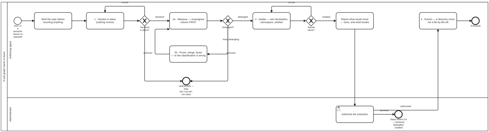

Generated from
cat-harness/skills/kg/graph-management/graph-detanglement.md— do not edit here.
Graph detanglement — the practice, not the migration
Skill id:
graph-detanglement· Package:graph-management
A repository grows until part of it wants to leave. Sometimes the reason is
size, sometimes it is semantic — “split only where consumers or cadences
differ” (docs/architecture/migration-plan.md). Either way the move is the
same and the mistake is the same: treating the split as a migration to be
executed rather than a practice to be run.
This skill is the practice. Its subject is any graph with directed edges whose nodes are being partitioned: TypeScript modules into repositories, blocks into chapters, skills into packages.
THE ONE RULE, and it is already written twice in this repository
Two files state it. Neither mentions the other.
At block scale — pipeline/qa-criteria-registry.ts, the
detangler-no-dependency-cycle criterion:
“a cycle is reorder-invariant — when two blocks each
uses:the other, or a longer loop closes, NO chapter ordering removes the forward edge. A cycle signals a genuine structural tangle: prune one dependency edge, merge the mutually-defining blocks, or factor the shared content into a third block both depend on.”
At repository scale — scripts/repo-partition.ts, the gate’s own failure
message:
“A repo may not import one that depends on it. Either the CLASSIFICATION is wrong — check the target’s layer before the importer’s — or the import is.”
At knowledge-graph scale — kg-detangle.ts, beside this skill (bun run cat kg:detangle), over the
instance stack each <instance>.json declares in needs.
The repository and knowledge-graph scales share ONE verdict function,
schemas/layer-direction.ts (bean j79e). An edge is wrong-direction
exactly when its target layer is not among what the source layer declares it
may reach — ALLOWED for repos, needs plus itself for instances — and no
reasoned permit names it. An instance with no needs is undetermined,
reported in its own column, never read as clean. The function stops at
direction: whether an allowed edge is a restatement or essential is the
adjudicator’s call, so those edges stay unclassified with the verdict as
their basis.
The direction count is the one detangle number that is GRADED, and it is
graded in a gate of its own — bun run cat kg:detangle:direction, blocking in CI
since the owner’s Option 2 ruling on bean p11x (2026-09-30). Everything else
this tool measures stays pinned: kg:detangle:check fails on a stale or
orphaned sidecar and never on a number, because the carve is an adjudication a
person makes and grading it would be the tool overruling the adjudicator.
The line between them is not a matter of degree. A module’s bucket is taste.
An edge whose target layer is not among what the source layer’s
<instance>.json says it may reach is a contradiction between two
declarations, and no adjudication makes it consistent — so it is the one thing
here a machine may refuse. Two flags, two npm scripts, two CI steps, so a red
run says which question broke.
Two things that gate reports and refuses to grade, both because grading them would be grading a could-not-determine:
undeterminededges — an endpoint’s instance declares noneeds. Failing on these would be the gate deciding a layering nobody declared.- the denominator — the count is over the edges that resolve. Dangling
refs (bean
blv9) are excluded before any edge is classified, so a0is “0 among the edges that resolve”, which is the weaker claim. The gate prints the excluded count and its breakdown, because a blocking gate that hides its denominator can pass because an edge failed to resolve rather than because the layering held. Beancjvsowns triaging them.
It is not check:partition’s second opinion. That tool’s root is one
instance, so it partitions a future layout by path rule among that
instance’s own modules; this checks the present layout against declared
needs across instances. bf5l measured them disagreeing — a real
cat-harness → folio-assistant-core import gave check:partition 0 and this
1. Either can be green while the other is red, and Phase I.1 of the migration
plan now needs both.
At term scale — a glossary declared ordered (owner, 2026-09-29, of
bootstrap’s terms: “logically tight, non self-referential”). Each term’s
requires must point UP, and checkDeclaredOrder in
schemas/dependency-order.ts names every forward, self and missing use. It is
the block-scale rule with terms for blocks: a forward requires is a forward
edge, and two terms defined by each other are a cycle no ordering removes,
so the moves are the same three — drop the use, merge the two terms, or factor
the shared idea into a term above both. The rule and its form on the page are
in glossary-terms §”Ordered glossaries”.
Same rule, four scales, two vocabularies. Prune, merge, or factor into a third are the only three moves, and “the classification is wrong” is the fourth possibility the block- and term-scale versions do not have because a block’s chapter is not in doubt the way a module’s layer is.
Everything below is machinery for finding out which of the four you are looking at.
The four stages, and each is a gate
Nothing moves until the stage before it measures zero. The stages are not advice about sequencing; each is a state the graph is in.
1. Declare in place
The sub-graph is declared where it already sits. Still inside the
repository, still connected, nothing moved. The declaration gains a directory
entry with its graphs[] kinds; a sub-graph that owns its own layout gains a
nested declaration (beans/beans.json, todos/todos.json) whose paths resolve
against its own directory, so the whole graph relocates by moving one
folder.
The worked example was a methodologies/ graph in the WHO base harness,
declared at repository scope in cat-harness/cat-harness.json while it still
sat in this tree, so that the directory lifted out whole when that harness
became its own repository (2026-10) — which is the claim, demonstrated. (The example was smart-kg/methodologies/grade.md until
2026-09-24, when GRADE became a skill plus code lists — bean wg7r.)
Declaring is cheap and extracting is expensive, which is the point. The
methodology graph typology is defined by exactly this property: “extractable
(somebody else’s work, adopted, so it lifts out with its declaration when the
field moves on)”.
2. Detangle
Drive cross-edges toward zero. This is the long stage and the rest of this skill is about it.
3. Isolate
The sub-graph carries its own declaration, its own namespace, its own published
artefact. bootstrap/ is the demonstrated case: its own declaration, its
own bootstrap: namespace — the prefix IS the stub, see
kg-export §”A prefix is the stub” — its own
graph document.
4. Extract
Only once edges are zero and the declaration stands alone. A directory move
rather than a file-by-file sift. The five-point gate is in
docs/architecture/migration-plan.md Phase II and is not restated here.
For a Knowledge Graph leaving as its own repositories — a content repository
and a tools repository — the rest of the method, from splitting the tools out
to the cutover, is kg-separation and its process
kg-separation.bpmn.
The seventeen moves
Every one of these was measured. Where a number appears, it was observed rather than predicted.
Measurement
1. Read the unassigned column before the edge count. A low edge count over an unclassified corpus is the same false comfort as a green check over an empty one. The tool says so itself and the phrasing is worth keeping: “these are not cross-edges — they are edges this tool declined to judge. Do not read them as clean.”
The same false comfort at a different join, and it has its own skill —
covered-is-not-reachable: “A skill showing as covered is not evidence that its code is reachable.” Coverage is a relation between a Tool and a skill, never between a Tool and a command, socheck:toolsanswers green over mechanisms nothing can reach. Found three times in one session, and measured by hand at 229 of 868 code files reachable from no node, collapsing to 13 groups — which is a partition measurement in everything but name. Read that skill before concluding a corpus is covered; it is not restated here.
2. The count rises when the measurement improves, and that is correct. Wrong-direction edges went 43 → 49 when thirteen previously-unjudged edges were folded in. The commit that did it is titled “judge the last six modules — and the count goes UP, correctly”. A detangling count that only ever falls is a count that is not being measured honestly.
3. Quote both numbers, not only the one that improved. One pass reported
“core→sci rose 12 → 16, honestly: server.ts is core now and still reaches
for render-latex, so the edge moved rather than vanished.”
4. An assignment is verified by re-running, never by being locally reasonable. Stated after a pass where the obvious move — the one the tool’s own message asks for — took the count from 5 to 15.
Ordering
5. Move the shared target first, then the importers. The most-repeated rule in the corpus, confirmed independently four times. Classifying a batch of leaves alone took edges 5 → 12; moving the shared schema targets first and the leaves after gave 5. Same shape at 5 → 15 in an earlier pass.
6. A schema moves with its script, or you mint the edge you meant to retire. “Classifying the script alone minted exactly the two edges that comment warns about — taking the wrong-direction count from 1 to 3.”
7. Declaration and readers first, files second. Update the declaration and
every consumer while the files are still where they are, verify green, and
only then git mv. “The reverse order makes every gate red at once with no
way to tell which failure is which.” Measured afterwards as “one declaration
edit, nothing else”.
8. Some fixes are two steps and only work in one order. Reclassifying three content handlers alone gave 11 edges, not 6, because the composition root then crossed the line to mount them. Resolving the routes by variable specifier first was edge-neutral by itself — and made the reclassification a net win, 10 → 6.
Judgement
9. Read what a module is FOR, never what directory it sits in. Restated elsewhere as “layer is not by directory”.
10. The triage question, in either of two equivalent forms. “Does it act on the PLATFORM or on CONTENT?” and “does it need a folio to have anything to do?” Four independent sessions converged on these two phrasings. The owner’s sharper cut: “needed to RUN a process is tooling; DESCRIBES one is core.” And the one-line test for the renderable side: “if it renders, it is not the harness’s.”
11. Check the TARGET’s layer before the importer’s. Now baked into the gate’s failure text, because it is “the mistake this session made twice”.
12. A keyword classifier gives false signals on filenames, and will keep
reclaiming. Twice, on two different words: fsh in fsh-guts.ts — the
trashcan — matched the FHIR-Shorthand keyword; content in content-type.ts
sent marker machinery to core. So “every keyword assignment is provisional
against a read of the module”, and removing a misclassification needs an
exact entry rather than deleting the old one, because a rule that
classifies by name will keep reclaiming it.
13. Inverting a dependency does not remove the edge if the new holder sits in the same layer. Measured: still 6.
14. The fix is not an exemption, it is the right owner. An exemption is what you write when ownership is genuinely ambiguous, and then it carries its reason inline — one entry records “omitting it cost 3 wrong-direction edges the day #468 merged”.
Enforcement
15. A check is an error only once its count is zero, and enforce per axis.
Repo precedent is the ruff comment in code-quality-gates.yml. “Turning a red
gate on just teaches the next agent to append || true.” The partition’s two
axes were enforced separately, each as it reached zero.
16. Watch the new gate FAIL before trusting it. Every enforcement step in
this corpus records a deliberate re-introduction producing exit 1. A gate that
cannot fail is indistinguishable from one that passed — bean xom7.
17. Merge main before trusting a local green; CI builds the merge ref. And its corollary, from a session that hit it: “a gate that passes locally and fails in CI is not always flakiness. It can be a NEWER, STRICTER gate on the merge commit, and a local sweep that predates it is stale rather than wrong.”
Declare a falsifier, and mean it
The practice’s own discipline, from the bean that drove the last leg to zero:
“If classifying the 19 RAISES the cross-edge count, the classification is wrong rather than the tool. Both numbers get quoted here too, not only the one that improves.”
It fired. Classifying nineteen scripts alone took edges 5 → 12, the seven new edges were read rather than argued away, and the order of operations changed because of it. A falsifier that never fires is decoration; this one rewrote the plan.
The failure this practice exists to prevent, and it is mine
Recorded because a procedure with no named failure teaches nothing:
“I reported in PR #469 that classifying
src/types.tsas core ‘was tried and measured, and the edge is unchanged’. The experiment was INCONCLUSIVE: the harnessexactlist is consulted first, so the core entry never applied. I noticed at the time, said so, and then reported the conclusion as measured anyway. The conclusion stands; the evidence I gave for it was not the evidence I had.”
Three passes then deferred that edge as an owner decision. When someone finally read the file, it was two symbols — one used once, one used seven times.
Two lessons, and the second is the one that generalises: a measurement you know to be inconclusive is not a measurement, and an edge that three passes called intractable is an edge nobody read.
Its sibling failure, same class, two files apart: “my earlier ‘skills/ has 0
imports’ was a measurement artefact — the grep pattern from "\.\./*skills/
cannot match ../../skills/.” And: “FeedbackItem has no consumers” was one
too low — an export {} block the grep pattern missed, which tsc caught.”
A grep that under-reports reads exactly like a clean result.
And the same failure once more, from a sibling session two days later, stated
in its most compact form yet: “describing a mechanism from its name and its
position in a diagram, then reasoning about what it needs. --payload <file.json>
settled in one line what three proposals had guessed at. A name
says what something is for; an argument list says what it does.”
That is move 9 and move 12 with the cost attached. Three proposals were made about a mechanism nobody had opened; one of the three was accepted and two were wasted, and reading the argument list first would have produced the accepted one directly. Which is also why the enumeration was still worth doing: “as a choice that is one proposal accepted and two wasted, while as an audit it is three lines and one action.” Enumerating dispatch points is how you find the ones already built — the audit framing survives a bad hit rate, the choice framing does not.
What the metric will not tell you
From the editorial side, measured on a real corpus:
“an unconstrained search cleared 66 of 236 forward references — and a narrative review of its 53 moves found 18 of them made the paper worse. Reducing the metric and improving the reading are different objectives, and they diverge often enough that the difference is not a rounding error.”
“Expect the reviewed yield to be roughly a third of what the raw metric promises, and prefer it.”
So: a guard is not an objective. Pinned nodes, atomic families and
container boundaries constrain the search, and split and merge are never
auto-dischargeable — they rename things and ripple through every reference.
Related
graph-rendering— drawing the graph being partitioned, with each group’s detangle numbers beside it. The UML overview pages show them per sub-graph.placement.md— the sibling SOP, for where a NEW node goes. Same shape: numbered steps, a stop, a closing checklist.covered-is-not-reachable— the reachability half, and the rule that “reachability is PLURAL”: the question is not which caller a mechanism should have but what should be able to START it. Pointed at rather than absorbed, perAGENTS.md’s warning against minting something to take over what an existing object already owns.docs/architecture/migration-plan.md— the phased plan for this repository’s own five-repo cut, including the Phase II per-repo gate.scripts/repo-partition.ts— the instrument. Its comment prose is where much of the above was recorded first.schemas/layer-direction.ts— the one wrong-direction verdict bothcheck:partitionandkg:detanglecall.
Processes that run this skill
This skill has its own process: A sub-graph wants to leave.

| process | step(s) that name it |
|---|---|
| A sub-graph wants to leave | 1 · Declare in place (nothing moves); 2a · Measure — unassigned column FIRST; 2b · Prune, merge, factor — or the classification is wrong; 3 · Isolate — own declaration, namespace, artefact; 4 · Extract — a directory move, not a file-by-file sift |
| A knowledge graph leaves for its own repositories | 1–3 · Declare, detangle, isolate |
| A sub-KG is staged in place, then leaves for its own repository | 3 · Push generic down first |